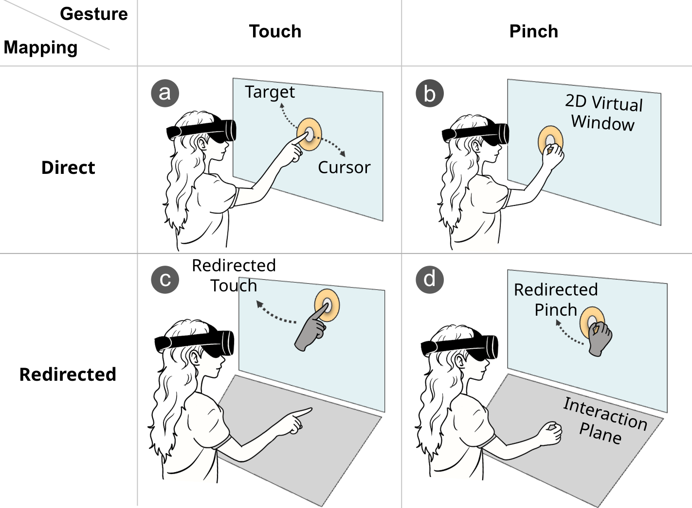
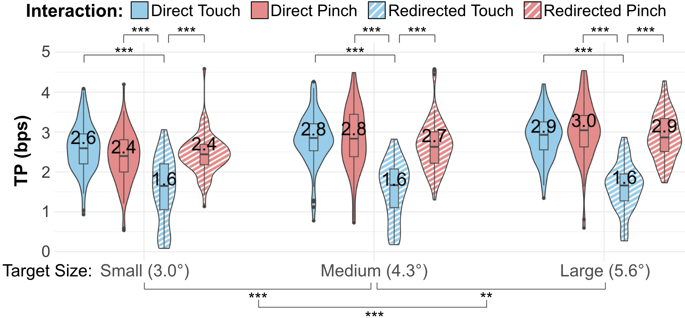
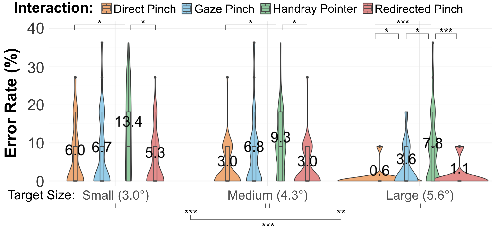
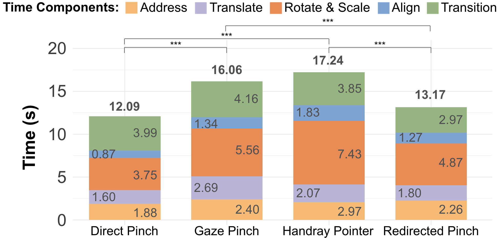
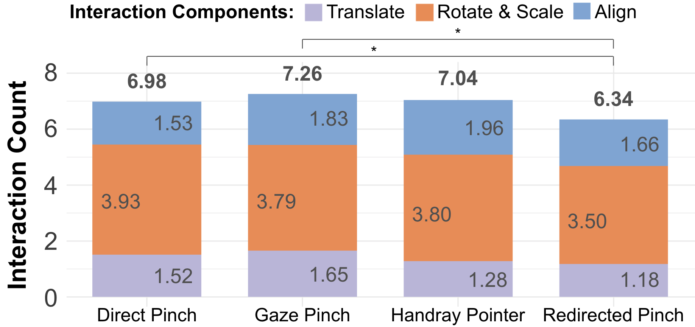

Comfortable hand movements near the waist control a vertical VR window; pinch provides explicit confirmation.
Abstract
Redirected Pinch combines input redirection with pinch confirmation for efficient and comfortable bare-hand interaction with 2D windows in VR.
A virtual plane at waist height remaps hand movements to a vertical window. Pinching provides self-haptic feedback and explicit confirmation, reducing the need to control depth during redirected input.
A design study and comparative evaluation show that Redirected Pinch balances accuracy, efficiency, comfort, and sense of agency across selection and docking tasks.
Video
Result Highlights
The comparative study measured discrete target selection and a more complex docking task. These results describe the tested tasks and setup; Redirected Pinch was not the fastest technique for every measure.
Redirected Pinch Design
Redirected Pinch separates a comfortable hand-control space from the visual workspace. Users keep their hands near the waist while their virtual hands interact with a vertical 2D window. Pinching supplies tactile thumb–finger contact and explicit confirmation, replacing the depth movement needed to touch a virtual plane.
A Comfortable Interaction Plane
The interaction plane is tilted 45°, located 0.4 m below the window center, and placed midway between the body and the window. Hand position and orientation are remapped onto the window. The plane appears when users look down to inspect it and fades when they look back at the workspace.

From One-Handed Selection to Bimanual Manipulation
One redirected hand selects and translates an object. Pinching with both hands enables rotation and scaling, followed by fine positional alignment. The prototype uses Unity, the Meta XR SDK, and a Meta Quest Pro with filtered hand tracking.
Why Pinch Instead of Touch?
The design study separated two factors: Direct versus Redirected mapping and Touch versus Pinch confirmation. Sixteen participants completed a within-subjects Fitts’ law task with three target sizes and four techniques, totaling 660 selections per participant.

Redirected Touch took longer and had lower throughput than the other three techniques. Redirected Pinch reduced error rates relative to touch-based methods for small and medium targets, while direct and redirected pinch did not differ significantly in completion time. This motivated using pinch to retain the comfort of redirection without requiring precise depth control.

Comparative Study
A separate 16-participant comparative study tested Direct Pinch, Gaze Pinch, Handray Pointer, and Redirected Pinch. Participants performed both a selection task and a docking task; technique order was counterbalanced.

- Selection: three target sizes, 99 selections per technique; completion time, error rate, and Fitts’ law throughput.
- Docking: 27 trials per technique across a 3 × 3 target grid; translate, rotate and scale, then align.
- Overall: 504 trials per participant, plus NASA-TLX workload, sense of agency, and preference ratings.

Selection Results
| Technique | Time (ms) | Error rate | Throughput (bits/s) |
|---|---|---|---|
| Redirected Pinch | 1,568.5 | 3.17% | 2.42 |
| Direct Pinch | 1,489.3 | 3.47% | 2.62 |
| Gaze Pinch | 1,430.6 | 7.39% | 2.70 |
| Handray Pointer | 2,054.8 | 10.61% | 1.67 |
Redirected Pinch had significantly lower error rates than Handray Pointer. Its error rate and throughput did not differ significantly from Direct Pinch or Gaze Pinch. Gaze Pinch was faster for medium and large targets, while Handray Pointer was slower across target sizes.

Comfort benefits remained visible during selection: Redirected Pinch was rated as less physically demanding than Direct Pinch and Handray Pointer, and less frustrating than Gaze Pinch and Handray Pointer.
Docking Results
Efficient Continuous and Bimanual Control
Mean docking time was 13.17 s for Redirected Pinch, compared with 12.09 s for Direct Pinch and 17.24 s for Handray Pointer. Redirected Pinch was significantly faster than Gaze Pinch and Handray Pointer; its completion time did not differ significantly from Direct Pinch.

Redirected Pinch required 6.34 interactions per docking trial, significantly fewer than Direct Pinch (6.98) and Gaze Pinch (7.26). Fewer repeated actions helped users sustain continuous manipulation.

Comfort, Agency, and Preference
During docking, Redirected Pinch was rated significantly lower in physical demand and effort than all three comparison techniques. Both Direct and Redirected Pinch provided greater sense of agency than Gaze Pinch and Handray Pointer. 14 of 16 participants ranked Redirected Pinch first for docking.

Takeaways and Design Implications
- Pairing redirection with pinch confirmation supports relaxed arm posture while preserving direct manipulation of a visible window.
- The strongest benefits appeared in docking, which combines continuous movement, bimanual input, and repeated precise adjustments.
- For quick discrete selection, gaze and direct input remain competitive. Redirected Pinch emphasizes the balance of control, comfort, and performance.
- The evaluation used seated tasks, a fixed interaction plane, and a controlled window layout. Longer sessions and more varied workspaces need further study.
Citation
@inproceedings{ying2026redirected,
author = {Ying, Wen and Kim, Yeonsu and Rahman, Adil and Hu, Erzhen and Lee, Geehyuk and Heo, Seongkook},
title = {Redirected Pinch: Efficient and Comfortable Bare-Hand Interaction for 2D Windows in VR},
booktitle = {Proceedings of the 2026 CHI Conference on Human Factors in Computing Systems},
year = {2026},
doi = {10.1145/3772318.3791512}
}